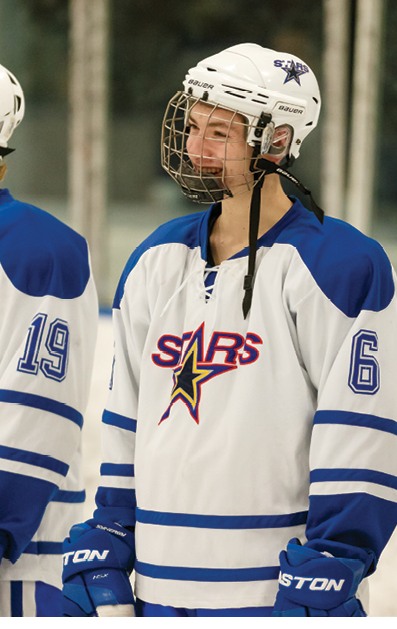
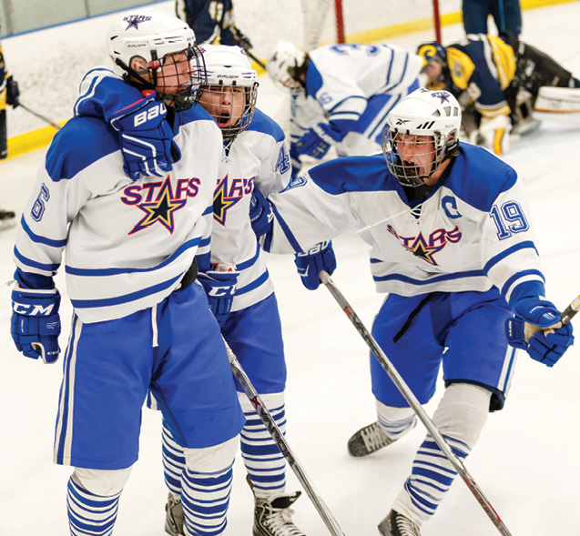
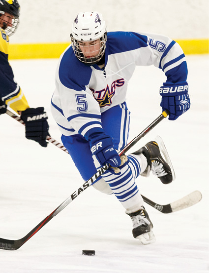

From the outside, being a hockey player looks tough. Being slammed into walls, pushed onto the ice, and whacked by a stick can't possibly be enjoyable... but Adam Weiner ('17) would beg to differ.
In fact, hockey is not just enjoyable. It's inspiring. One of the most important games for the hockey team was the game against Middleton. It was senior night, and although they suffered a loss, it was still a pivotal moment for the team. "Our team finally got to see how we could keep up with, and even have a chance of beating the third ranked team in the state," explained Adam Weiner ('17). "Our determination to win during the game was absolutely remarkable."
Even though the guys worked hard on the rink, they still make sure to have fun together as a team outside of games and practice. "After the Middleton game and the banquet that night, some of us decided to go to Oscars and get ice cream," remembered Weiner. "Then, we went and had a dance party in the parking lot when it was only fifteen degrees out... for no reason in particular. It really was a fun experience to have with a team as great as mine."
The hockey team greatly focuses on the team aspect of the sport. They have had a very successful season, largely in part to this. “Not a lot of players at higher levels play for themselves, but rather for the respect of their coaches and their teammates, which means you have a bunch of guys who are working hard and playing for the love of the game,” stated Weiner. So maybe he’s getting slammed into the wall, pushed onto the ice, and hit with sticks... but he wouldn’t have it any other way.
 